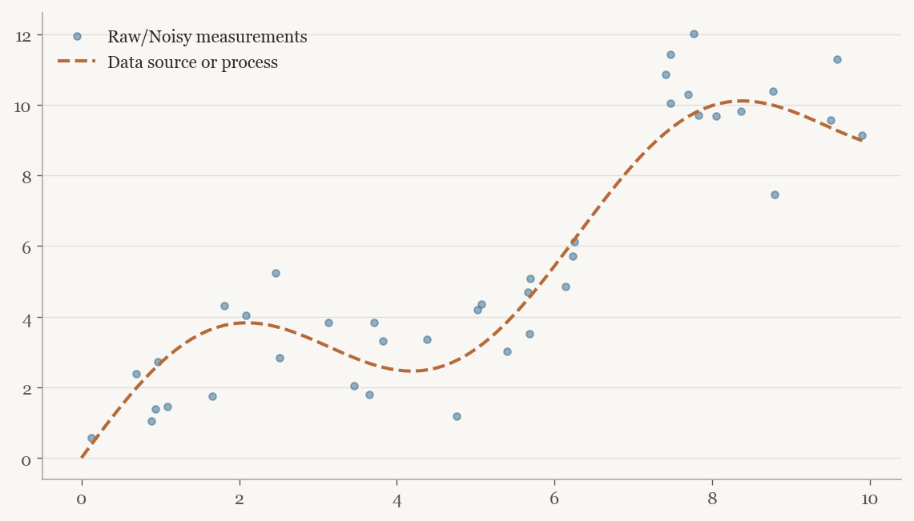
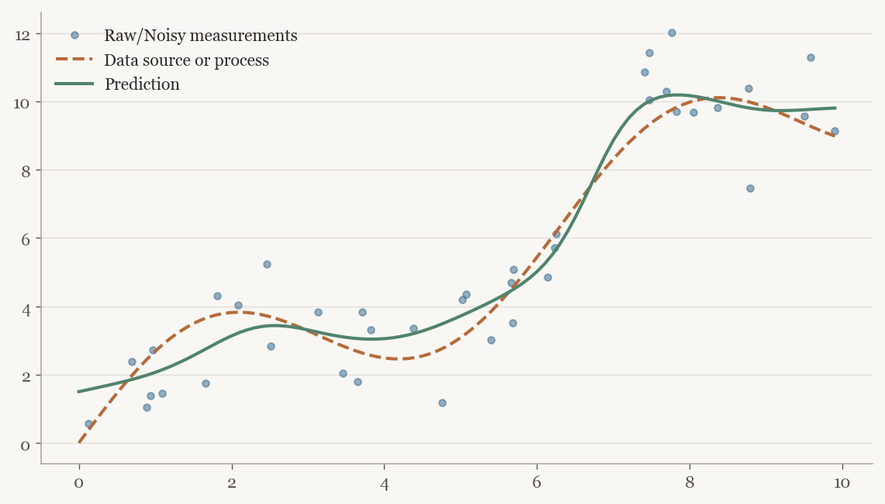
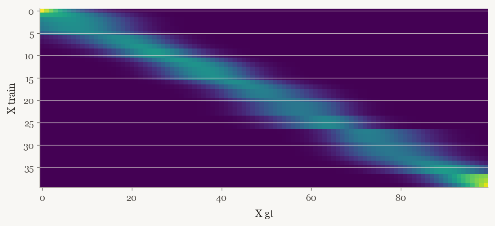

Nadaraya-Watson Regression¶
a.k.a Kernel Regression
This is an early (from the 1960s) non-parametric regression method. The goal is to estimate the value of a function \( m(x) = E[Y|X=x] \) from training data
\( \{(x_i, y_i) | x_i \in X, y_i \in Y, i=1,2,...,n\} \).
As the term ‘non-parametric’ suggests, this is different from regression methods that involve assuming the shape of the function and then estimating the parameters.
Instead, we will try to produce an estimate at a given point \( x \) using a weighted combination of the available data.
The weights will be generated using a scalar-valued function \( f(x, x_i) = \phi(||x - x_i||) \).
The idea here is that the contribution of each data-point or feature \( x_i \) diminishes as the distance between \( x \) and \( x_i \) increases.
Intuitively, this means that data-points closer to \( x \) should contribute more to our estimate, while ones that are farther away should contribute less.
The function \( f(x, x_i) \) is called a kernel. Commonly used kernels include:
Gaussian
Boxcar
Epanechikov
We usually include a parameter \(h\) that controls the smoothness of the estimated function. Intuitively, this is a way of controlling how much a single data point can influence the
result.
For our experiment, we will use a Gaussian kernel.
Let’s start by generating the data.¶
import math
import numpy as np
import torch
import matplotlib.pyplot as plt
plt.style.use('../mplstyle/blog.mplstyle')
def wavyline(x, k=2):
return k*torch.sin(x) + x
n = 40
x_train, _ = torch.sort(torch.rand(n)*10)
y_train = wavyline(x_train) + torch.randn(n)
x_gt = torch.arange(0,10,0.1)
y_gt = wavyline(x_gt)
plt.plot(x_train,y_train, 'o', alpha=0.5)
plt.plot(x_gt, y_gt, '--')
plt.legend(['Raw/Noisy measurements', 'Data source or process'])
plt.show()

As you can see, we have generated 40 noisy datapoints for this curve.
Now, let’s run the regression on our training data¶
Using our Gaussian kernel function, we can estimate the curve from the data with a weighted average of the kernel at different points.
def gaussian(x, h=1):
return torch.exp(-x**2/(2*h))
def nadaraya_watson_regression(x_train, y_train, x_gt, h=1.0):
distances = x_train.reshape(-1,1) - x_gt.reshape(1,-1)
weights = gaussian(distances, h)
norm_weights = weights / weights.sum(0)
y_pred = y_train@norm_weights
return y_pred, norm_weights
y_pred, attn_weights = nadaraya_watson_regression(x_train, y_train, x_gt, 0.5)
plt.plot(x_train,y_train, 'o', alpha=0.5)
plt.plot(x_gt, y_gt, '--')
plt.plot(x_gt, y_pred)
plt.legend(['Raw/Noisy measurements', 'Data source or process', 'Prediction'])
plt.show()

The green curve is a fairly good approximation of the original source or process curve, without learning any parameters!
We can experiment with different values of smoothing constant \( h \).
y_pred_0_1, weights_0_1 = nadaraya_watson_regression(x_train, y_train, x_gt, h=0.1)
y_pred_0_5, weights_0_5 = nadaraya_watson_regression(x_train, y_train, x_gt, h=0.5)
y_pred_1_0, weights_1_0 = nadaraya_watson_regression(x_train, y_train, x_gt, h=1.0)
y_pred_1_5, weights_1_5 = nadaraya_watson_regression(x_train, y_train, x_gt, h=1.5)
Manim Community v0.18.1
Finally, we can interpret the regression weights as attention over the training data points¶
On the X axis, you can see the each of the input data points. On the Y axis, you can observe the attention weights over the training data

Manim Community v0.18.1
Notice how the attention weights become more diffuse as the \( h \) value increases from 0.1 to 1.5 .